Bitmap2 Component
PCB Calculator
Dodatkowe narzêdzia wspomagaj±ce
Spis tre¶ci
Prawa autorskie
Copyright © 2010-2014. Ten dokument jest chroniony prawem autorskim. Lista autorów znajduje siê poni¿ej.
Mo¿esz go rozpowszechniaæ oraz modyfikowaæ na zasadach okre¶lonych w GNU General Public License (http://www.gnu.org/licenses/gpl.html), wersja 3 lub pó¼niejsza, albo okre¶lonych w Creative Commons Attribution License (http://creativecommons.org/licenses/by/3.0/), wersja 3.0 lub pó¼niejsza.
Wszystkie znaki towarowe u¿yte w tym dokumencie nale¿± do ich w³a¶cicieli.
Autorzy
Kerusey Karyu
Kontakt
Wszelkie komentarze lub sugestie dotycz±ce tego dokumentu prosimy kierowaæ na listê dyskusyjn± deweloperów programu KiCad: https://launchpad.net/~kicad-developers
Wersja
19 Pa¼dziernika 2014 (alpha)
Informacja dla u¿ytkowników komputerów Apple Macintosh
Wsparcie programu KiCad dla systemu operacyjnego Apple OS X jest w zaawansowanej fazie eksperymentalnej.
1. Wprowadzenie
Dodatkowe narzêdzia pakietu KiCad
KiCad EDA Suite oprócz podstawowych narzêdzi edycyjnych, takich jak Eeschema, Pcbnew, CvPcb oraz PL_Editor dostarcza te¿ dwa dodatkowe narzêdzia uzupe³niaj±ce:
- Bitmap2Component
- PcbCalculator
Pierwsze z nich s³u¿y do ³atwego tworzenia logotypów, które mo¿na u¿yæ na schematach, PCB lub wydrukach. Logotypy s± tworzone na podstawie obrazów bitmapowych, które s± odpowiednio konwertowane do formatów obs³ugiwanych przez kluczowe programy pakietu KiCad EDA Suite.
Drugie z narzêdzi jest do¶æ lu¼no zwi±zane z ca³ym pakietem i stanowi pewien rodzaj pomocnika dla projektantów, gdy¿ zawiera parê prostych kreatorów i narzêdzi wspomagaj±cych obliczenia.
2. Bitmap2Component
Przeznaczenie
Bitmap2Component to samodzielne narzêdzie, którego przeznaczeniem jest konwersja map bitowych na symbole lub footprinty. G³ównie bêd± to wszelkiego rodzaju znaczki, logotypy i inne elementy graficzne, które trudno by³oby utworzyæ korzystaj±c z dostêpnych narzêdzi edycyjnych Eeschema lub Pcbnew.
Program na podstawie zawarto¶ci obrazka generuje odpowiednie pliki bibliotek .lib lub .kicad_mod, które mo¿na pó¼niej zaimportowaæ do w³asnych projektów lub skopiowaæ do zbiorczych bibliotek.
Przetworzone elementy mo¿na umieszczaæ potem na schematach jako zwyk³e symbole. W przypadku footprintów tak utworzona grafika jest przenoszona na warstwy opisowe.
G³ówne okno programu
Po uruchomieniu programu poka¿e siê g³ówne okno programu (tu zosta³ ju¿ wcze¶niej za³adowany jaki¶ plik graficzny):
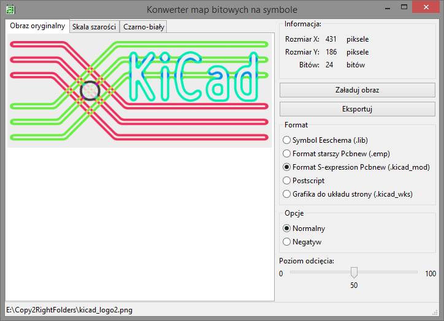
Okno jest podzielone na dwie czê¶ci. Czê¶æ z lewej strony to trzy panele podgl±du grafiki. Pomiêdzy panelami mo¿na siê prze³±czaæ za pomoc± zak³adek.
Kolejne panele wy¶wietlaj±:
- Obraz oryginalny - Tu wy¶wietlany jest oryginalny obraz, który poddany zostanie konwersji.
- Skala szaro¶ci - Tu wy¶wietlany jest przetworzony obraz pozbawiony kolorów, ale z zachowanym poziomem luminancji ka¿dego piksela (256 odcieni szaro¶ci).
- Czarno-bia³y - Tu wy¶wietlany jest przetworzono obraz pozbawiony kolorów i poddany procesowi "twardego odciêcia".
Czê¶æ z prawej strony zawiera wszystkie polecenia i ustawienia programu. Panel informacyjny dostarcza informacji o obrazie: rozdzielczo¶æ, g³êboko¶æ palety kolorów. Pod nim znajduj± siê dwa g³ówne polecenia. Panel formatowania pozwala wybraæ typ docelowy.
Suwak pozwala na regulacjê poziomu "twardego odciêcia". Zmiany po³o¿enia suwaka s± widoczne w zak³adce Czarno-bia³y.
Proces konwersji
Przed wykonaniem procesu konwersji nale¿y za³adowaæ bitmapê korzystaj±c z przycisku Za³aduj obraz nastêpnie prze³±czaj±c siê na zak³adkê Czarno-bia³y dostroiæ poziom odciêcia suwakiem, aby istotne fragmenty oryginalnego obrazka zosta³y zachowane:
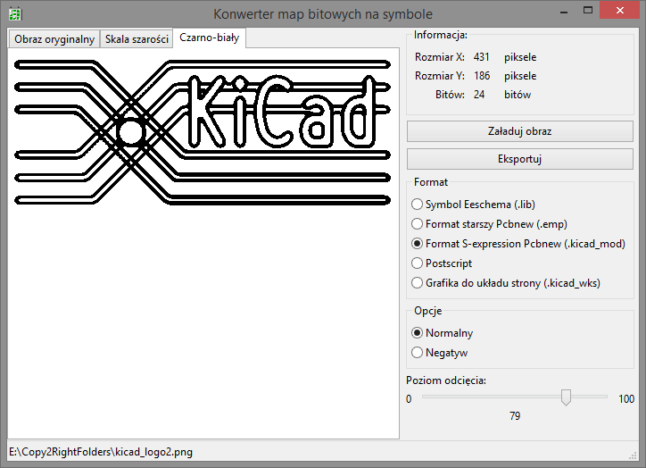
Po wybraniu ¿±danego formatu wyj¶ciowego, nale¿y nacisn±æ przycisk Eksportuj. Program poprosi o podanie nazwy pliku - domy¶lnie program zapisuje pod nazw± logo.
W przypadku plików bibliotek symboli lub footprintów, zostanie utworzona biblioteka z jednym tylko elementem pod nazw± LOGO.
Formaty wyj¶ciowe
Jak ju¿ wspomniano, dostêpnych jest kilka formatów wyj¶ciowych.
3. PCB Calculator
Przeznaczenie
PCB Calculator to zestaw bardzo prostych narzêdzi z kilkoma kalkulatorami i pomocami dla projektantów schematów oraz obwodów drukowanych. Za jego pomoc± mo¿na na przyk³ad obliczyæ minimaln± szeroko¶æ ¶cie¿ki w zale¿no¶ci od zak³adanego przep³ywu pr±du, czy okre¶liæ jaka bêdzie bezpieczna odleg³o¶æ od innej ¶cie¿ki (Track clearance).
Osoby które maj± problemy z okre¶laniem warto¶ci rezystancji na podstawie kolorów pasków znajduj±cych siê na rezystorach - zw³aszcza o w±skiej tolerancji - znajd± równie¿ tabelê kolorów i odpowiadaj±ce im warto¶ci.
G³ówne okno programu
Po uruchomieniu programu uka¿e siê g³ówne okno programu (tu wybrano zak³adkê Kody kolorów):
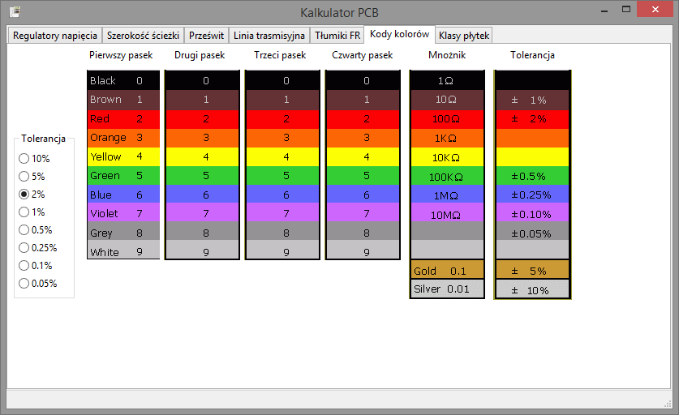
Poszczególne narzêdzia znajduj± siê w osobnych zak³adkach:
Wybranie jednej z nich spowoduje wy¶wietlenie na panelu sk³adników wybranego narzêdzia.
Narzêdzia
W chwili obecnej dostêpne s± nastêpuj±ce narzêdzia i tabele:
- Regulatory napiêcia - prosty kalkulator do obliczania dzielników sprzê¿enia zrwotnego regulatorów napiêcia.
- Szeroko¶æ ¶cie¿ki - kalkulator szeroko¶ci ¶cie¿ek wg norm IPC2221.
- Prze¶wit - tabela z minimalnymi odstêpami miêdzy¶cie¿kowymi.
- Linia transmisyjna - kalkulator impedancji linii transmisyjnych i falowodów.
- T³umiki FR - kalkulator t³umienno¶ci filtrów wysokiej czêstotliwo¶ci.
- Kody kolorów - tabela z kodowaniem oznaczeñ rezystorów kodami paskowymi.
- Klasy p³ytek - tabela klas p³ytek drukowanych.
Regulatory napiêcia
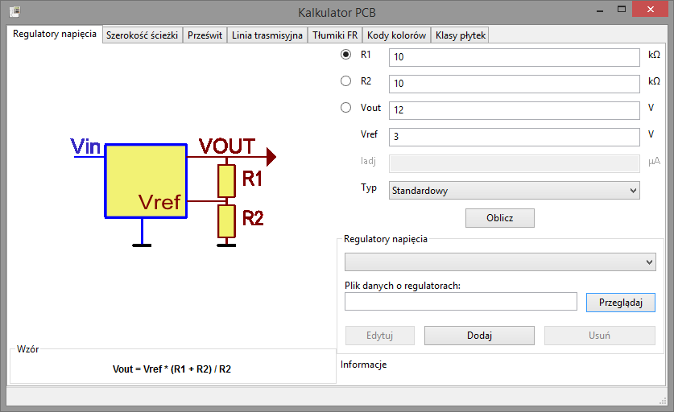
Narzêdzie to s³u¿y do ³atwego obliczania warto¶ci dzielników sprzê¿enia zwrotnego ró¿norodnych regulatorów napiêæ. Generalnie regulatory te podzielono na dwie kategorie:
- Standardowy - z oddzielnym wej¶ciem steruj±cym wzmacniaczem b³êdu. Rozwi±zanie to stosowane jest g³ównie w regulatorach impulsowych.
- Trójkoñcówkowy - z wej¶ciem steruj±cym wzmacniaczem b³êdu z uwzglêdnieniem wyp³ywaj±cego przez niego pr±du. Rozwi±zanie to stosowane jest g³ównie w stabilizatorach liniowych.
Proces obliczania warto¶ci
Pierwszym elementem jaki nale¿y okre¶liæ, by kalkulator móg³ obliczyæ w³a¶ciwe warto¶ci jest napiêcie odniesienia VREF (zwane te¿ czêsto VFB), które nale¿y wpisaæ w jedno z pól. W przypadku regulatorów trójkoñcówkowych warto te¿ odszukaæ warto¶æ pr±du IADJ.
Kalkulator jest w stanie obliczyæ tylko jedn± warto¶æ, któr± wybiera siê zaznaczaj±c odpowiednie pole jako aktywne. Resztê pól nale¿y uzupe³niæ rêcznie. Przyk³adowo, by obliczyæ warto¶æ rezystora R2 dla regulatora impulsowego LM2576-ADJ by na wyj¶ciu uzyskaæ 5V, nale¿y zaznaczyæ pole R2, w pole R1 nale¿y wpisaæ warto¶æ zak³adanej rezystancji - producent zaleca 1k - 5k, a w pole Vout warto¶æ 5. Regulator ten posiada napiêcie referencyjne równe 1.23V, zatem t± warto¶æ nale¿y wpisaæ w pole Vref. Po wype³nieniu pól wystarczy klikn±æ polecenie Oblicz by w pole R2 zosta³a wpisana obliczona warto¶æ:

Najbli¿sz± warto¶ci± bêdzie rezystor 1k. Mo¿na sprawdziæ o ile zmieni siê napiêcie Vout przy tej¿e warto¶ci:
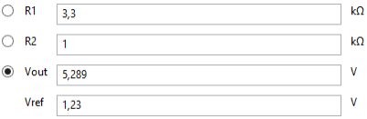
Biblioteka wzorców stabilizatorów
Aby wielokrotnie nie szukaæ i wpisywaæ warto¶ci VREF dla wybranych stabilizatorów mo¿na utworzyæ plik z bibliotek± stabilizatorów.
W tym celu nale¿y klikn±æ przycisk Dodaj w dolnej czê¶ci i w otwartym oknie dialogowym wpisaæ nazwê stabilizatora i jego napiêcie VREF:
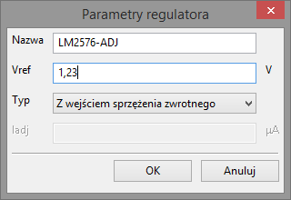
Po klikniêciu OK nazwa stabilizatora pojawi siê na rozwijanej li¶cie w dolnej sekcji.
Warto¶ci dodane do listy powinny byæ zapisane do pliku bazy danych, sk±d razie czego mog± zostaæ przywrócone przez ponowne wczytanie tej listy. Aby zapisaæ plik danych nale¿y nacisn±æ przycisk Przegl±daj i podaæ nazwê pliku.
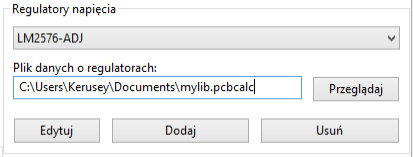
PCB Calculator pamiêta ostatnio wybrany plik i zostanie on wczytany przy ponownym uruchomieniu programu.
Szeroko¶æ ¶cie¿ki
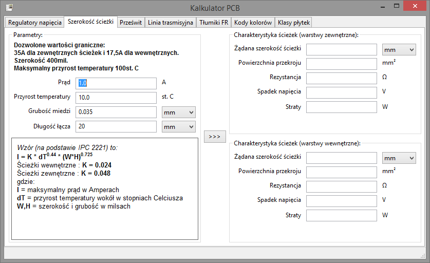
Prze¶wit
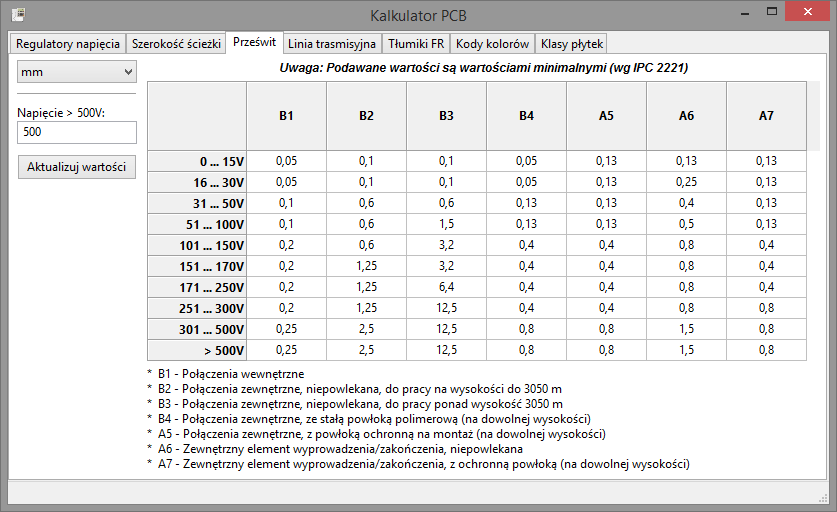
Linia transmisyjna
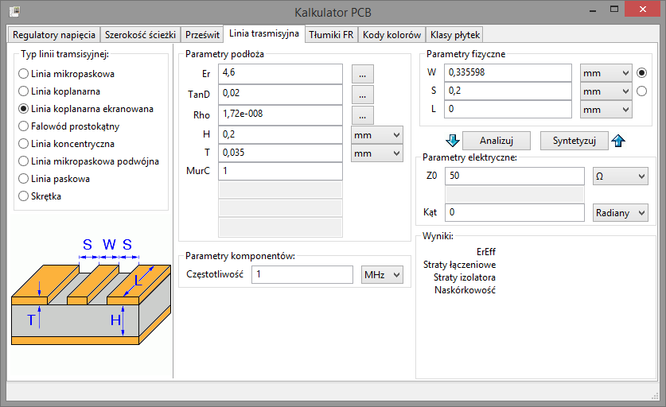
T³umiki FR
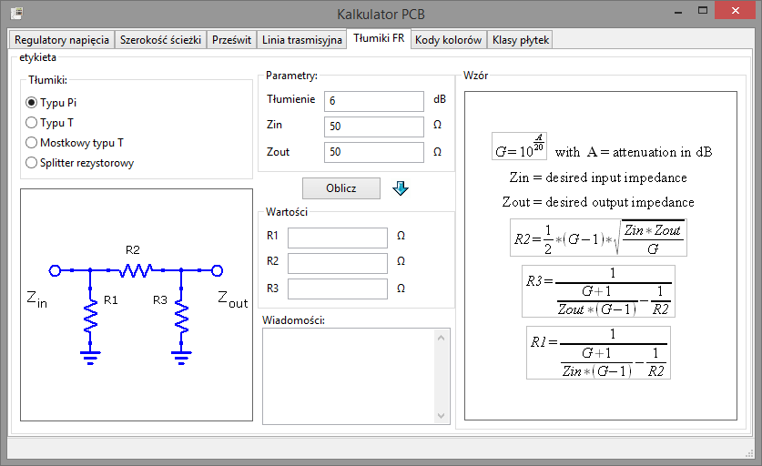
Kody kolorów
Klasy p³ytek
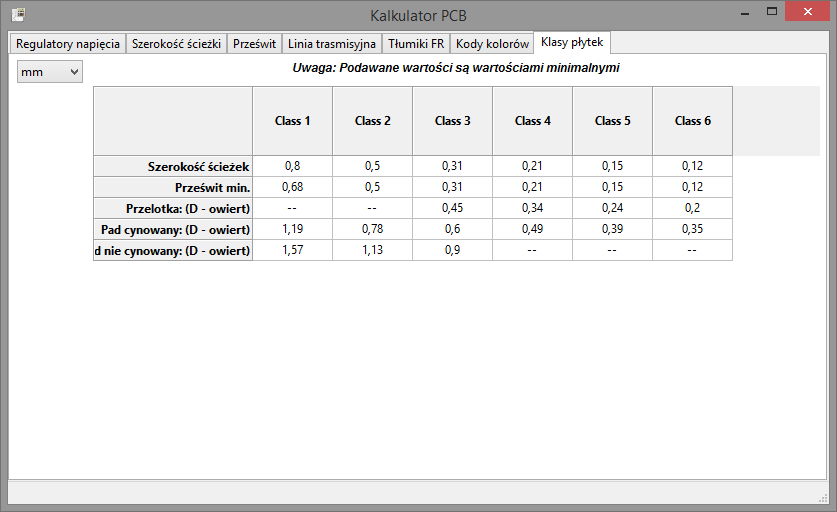
To be continued...